Created: April 19, 2011
By: Parallelus (Andy Wilkerson)
Thank you for purchasing this theme. I take great pride in creating useful web applications and I'm delighted that you have chosen my design for your website. My hope is that with this theme you can take the hard work out of building a website and focus on your content and growing you business instead. I do hope you get as much enjoyment from using the theme as I have from creating it.
Feedback and suggestions are always welcomed so don't hesitate to leave me comments. If you have questions not answered in this document, please email me using my profile contact form. If you are happy with the theme please take a moment to rate it on the ThemeForest website.
Thank you,
Andy Wilkerson
This theme is designed for use with WordPress 3.0 or higher. The code was written to be backwards compatible where possible, however it is recommended you use version 3.0 or higher. If you are not using WordPress 3.0 or higher and you can upgrade your site I recommend you do this before installation.
Although every effort has been made to ensure the theme is bug free and easy to use there is always the chance for errors. If you do find a problem please notify us immediately through the ThemeForest account page so we can ensure it gets fixed as quickly as possible.
Installing the theme can be done two ways. You can upload the theme ZIP file using the built in WordPress theme upload, or copy the files through an FTP client.
Be sure to extract the file "theme-mingle.zip" from the ThemeForest download before uploading. Using the ThemeForest ZIP file directly will result in a "Missing Style Sheet" error.
Once the theme is installed you can configure it for your content. See the sections below on configuring the theme to start adding your content.
This section provides a brief overview of the theme options, setup and configuration. It will help you get started quickly by providing a basic overview of the theme structure. Additional details about each feature can be found in later sections of this document.
There are several pre-made skins installed with the theme. You can activate any of these from your admin area: "Appearance > Design Settings > Default Design Settings". You can also add custom skins. There is more information custom skins in the "Skinning the Theme" section.
Install and Activate the Theme
If you don't know how to install WordPress themes, see the full "Installation" instructions above. Once the theme is installed, activate it from "Appearance > Themes" by clicking the "Activate" link for "Mingle".
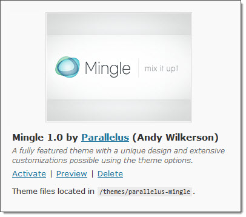
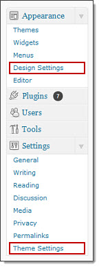Default Options
After activation 2 new menus will appear in your admin, "Appearance > Design Settings" and "Settings > Theme Settings". You will first set the defaults in the Theme Settings area.
- Click "Settings > Theme Settings"
- At the top of the page you will be prompted to import a saved settings file. Click the link "View data for import"
- Scroll to the bottom of the resulting import page and click "Import Settings"
- After importing, scroll down to the "Contact Form" section and change the "Email To" address to your own address.
You have now imported all default theme settings. After importing you can optionally modify any of the settings you choose. These settings are described in detail in the "Theme Settings" section of this document.
Next, configure the following default Design Settings.
- Click "Appearance > Design Settings"
- Under "Default Design Settings" click the button "Edit All Default Design Settings"
The resulting page will show most options as unset, however the theme will continue to use pre-configured defaults until you save this page for the first time.
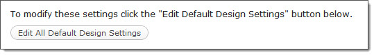- Set the following options:
- Logo, Logo width and Logo height
- Skin (default: Skin 1)
- Heading font (defult: Museo)
- Body font (default: Arial)
- Set default layout options:
- Header (default: Default Page Header)
- Footer (default: Default Footer)
- Main layout (default: Right Sidebar Layout)
- Set default templates:
- Home page (default: Home Page Layout)
- Pages (default: Left Sidebar Layout)
- Posts (default: Right Sidebar Layout)
- Blog (default: Right Sidebar Layout)
- Search (default: Right Sidebar Layout)
- Error (default: Full Width Layout)
Setting up Menus
To create a menu or attach an existing menu to the theme, go to "Appearance > Menus".
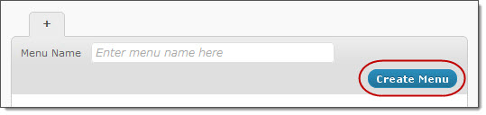
Attach the menu to the theme by setting the menu location.
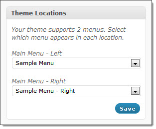
Adding Content and Shortcodes
At this stage your website should be capible of displaying all of your content. The remaining sections of the quick start quide serve as an introduction to theme features and functionality.
Much of the theme related content is inserted using "shortcodes". A shortcode is a snippet of text inserted into the editor which produces a specific output. Shortcodes are formatted as [short_code_name] or sometimes [short_code]Some content[/short_code]
A full list shortcodes and their parameters is available here: Shortcode Documentation
Customize the Slide Show
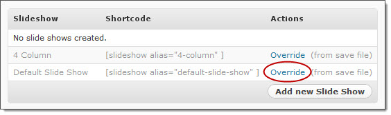
From "Appearance > Design Settings > Slide shows", click the "Override" link for "Default Slide Show". On the next page scroll to the bottom and click "Save". Open the slide show again and choose "Slide 1". Replace the image path in the "Media" input with your own image. You can get the path from your WordPress Media area by editing a file and copying the "File URL"
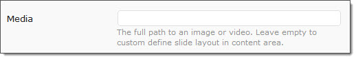
Next, override the "Home Page Header" in the layout page headers section. Change "Primary content" to "Slide show: Default Slide Show" then click "Save"
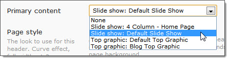
Refreshing your home page should reveal the update.
More information about slide shows:
Side Show Features
Slide Show Shortcode ParametersCustomize the Top Graphic
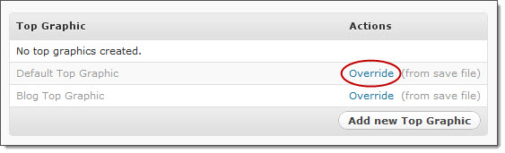
From "Appearance > Design Settings > Top Graphics", click the "Override" link for "Default Top Graphic". On the next page scroll to the bottom and modify the "Content" text to have your desired text or images. You can use HTML and shortcodes freely in this area. After editing the content click "Save".
Refreshing a content page should reveal the change.
More information about top graphics: Top Graphic Usage
Top Sidebar Content
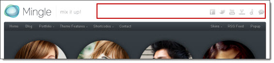
The top right section of the header is designed to load widget content. You can select any sidebar as the content source by editing the layout "Page Header" and modifying the setting for "Top sidebar". By default the sidebar for the included headers is set to "Header Widget Area".
Go to "Appearance > Widgets". Drag the "Text" widget into the "Header Widget Area" sidebar. You can add any content you choose, but to get started you can past the following shortcode into the text area:
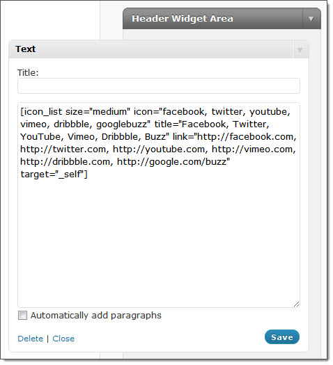[icon_list size="medium" icon="facebook, twitter, youtube, vimeo, dribbble, googlebuzz" title="Facebook, Twitter, YouTube, Vimeo, Dribbble, Buzz" link="http://facebook.com, http://twitter.com, http://youtube.com, http://vimeo.com, http://dribbble.com, http://google.com/buzz" target="_self"]Click "Save" when done. For details on cusomizing the links and icons for the shortcode above see the Icon List Shortcode page.
Showcase Content
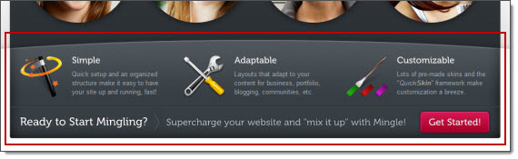
Add content or modify an existing showcase area by editing a layout "Page Header". Start by clicking "Override" for "Home Page Header".
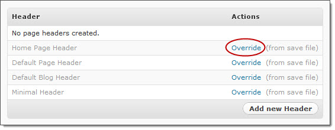
Scroll down to the "Showcase" area where the current showcase content is entered. At first glance this may look overwhelming as it's a huge blob of text. don't worry, it's much simpler than it looks. Unfortunately, content formatting (tab and line breaks) cannot be included in when the theme is loaded so the text becomes difficult to read. This will not happen to your own content.
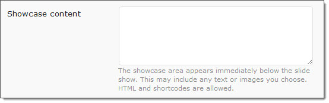
For the purpose of this change deleted the existing text and add the following in its place:
<h2>Welcome to my new website!</h2>
Don't worry about losing the demo content. After you make the change you will see the "Home Page Header" appears in your list as a standard user created header. Simply click the "Delete" option for this entry and it will restore the saved version included by default.
Footer Content
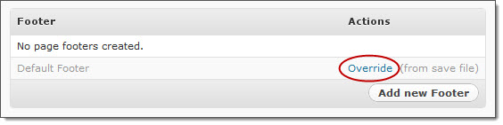
Footer content is entered directly into the layout "Page Footers", however to make the area more flexible and include the ability to add widgets the default footer includes sidebar shortcodes in the footer areas. To see how this is accomplished, click "Override" for "Default Footer".
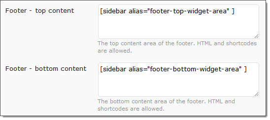
To edit the content of the footer, go to "Appearance > Widgets". You should see two widget areas, "Footer - Top" and "Footer - Bottom". Start by dragging the default "Text" widget into the "Footer - Bottom".
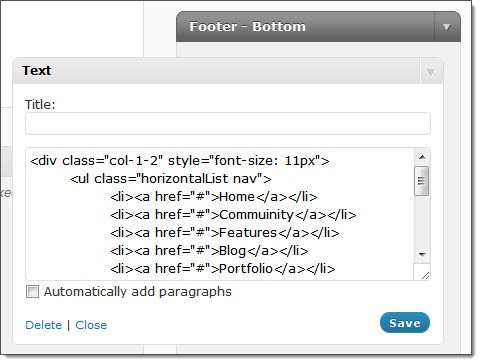
Paste the code below into the text area to duplicate the demo website:
<div class="col-1-2" style="font-size: 11px">
<ul class="horizontalList nav">
<li><a href="#">Home</a></li>
<li><a href="#">Commuinity</a></li>
<li><a href="#">Features</a></li>
<li><a href="#">Blog</a></li>
<li><a href="#">Portfolio</a></li>
<li><a href="#">FAQs</a></li>
<li><a href="#">Contact</a></li>
</ul>
</div>
<div class="col-1-2 last" style="font-size: 11px">
<p class="right">
Copyright © 2011 - <a href="http://para.llel.us">Parallelus</a> - All rights reserved. Terms and Privacy Policy</p>
</div>The top area, "Footer - Top" uses a combination of layout shortcodes and the WordPress "Custom Widget" menus to create the menu lists.
Customizing Layouts
You can create as many layouts as you need. For this example we will create a custom layout to serve as a three column page.
- Begin by clicking the "Add new layout" button at the bottom of the "Page Layouts" list.
- Enter the title "Three Column Layout"
- Enter the layout key "three-column-layout"
- Set the header to "Default Page Header"
- Set the footer to "Default Footer"
Next, you need to add layout containers into the page area. Drag the "1/3 Container" into the page area. For this example we only need this one container. Once the layout container is in place, drag content areas into the layout. First drag the "Default Content" content area into the first column. Next, drag the "Sidebar" and select "Default Sidebar". Last, drag another "Sidebar" into the third column and select "Blog Sidebar". Save the layout when finished.
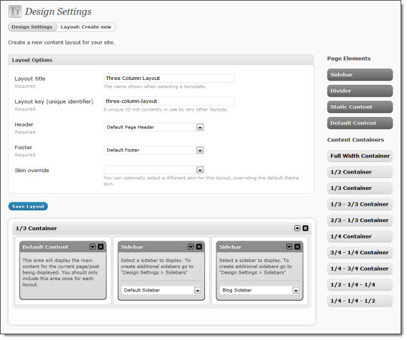
After creating the layout it can be used with any page or post. To test the layout open an existing page and select the new layout from the "Layout Options" box on the right side of the edit page.
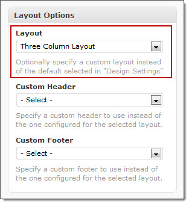
Save the changes and view the page to see the new layout.
More layout information: Layout Manager
The theme options are broken into 2 areas: Theme Settings and Design Settings. This section covers the optons under the Theme Settings area.
Blog Options
Configure the themes default design settings and options.
- Show author name - Include the author name in blog posts.
- Show post date - Include the posted date in blog posts.
- Show comments link - Include the comment count and a link to the form in blog posts.
- Show categories - Include a list of categories for each post in its description.
- Show tags - Include a list of tags for each post in its description.
- Images on blog lists - Show featured image for each article on the blog page?
- Featured image on post - Show featured image for current post on the single post page. Some content may not display properly using this setting, such as bulleted lists at the very beginning of your post. If this happens, disable the setting and add images to the page from the content editor.
- Post image width - The default post image width. This can also be set from the blog shortcode or in a single post.
- Post image height - The default post image height. This can also be set from the blog shortcode or in a single post.
- Use post excerpts - Show content excerpts on your blog pages. Selecting "No" will display the full post in your post list.
- Post excerpt length - The number of words in post excerpts, 250 max. Custom excerpts are not restricted by this setting.
Blog pages are added to the theme using the blog shortcode, [blog category="1,2,3"]. There are a number of ways to configure and customize the output of the blog page from the shortcode parameters. A full list of all blog page paramaters and additonal blog information can be found here:
Blog Settings
Blog Shortcode ParametersContact Forms
Display your form with the [contact_form] shortcode. You can customize each instance with unique values for "to", "subject" and "thankyou" in the form. Empty fields use the default settings established in the fileds below.
- Email To - The default address to deliver messages sent from contact forms.
- Subject - Enter the default email subject for contact form messages.
- Thank You Message - The "thank you" message visitors will see after sending.
- Button text - The text to appear on the send button. Default: "Send"
- Use CAPTCHA - Require CAPTCHA image verification?
A full list of contact form paramaters and additonal information can be found here:
Contact Form Information
Contact Form Shortcode ParametersContact Form Fields
You can create new fields to add to your contact form.
- Field title - The name of the field as it will be displayed in the form.
- Field key - This key is used to add the field to contact forms.
- Caption - You can add instructions or information for the user about this field. HTML code is allowed.
- Field type
- Text - A simple one line text input.
- Textarea - Plain text box for multiple lines fo text.
- Select - A select list (drop down), using the names/values specified in the "Values" field below.
- Radio button (set) - A radio button set, where the user can select a single option. The list of values is specifed below.
- Checkbox - Single checkbox.
- Hidden - A hidden field not seen by the user. Specify the value in the field below.
- Values - Set the value of hidden fields here or they will contain no information. If your selected field type requires pre-defined options, such as radio buttons or select boxes, enter the values here as a comma separated list. For example, your values could be entered as Good, Better, Best.
- Required - Require users to enter a value?
- Required error message - Enter an optional error message for empty fields that are required.
- Minimum length - You can optionally specify a minimum number of characters allowed for this field.
- Maximum length - You can optionally specify a maximum number of characters allowed for this field.
- Validation - You can apply validation to some fields to ensure valid entries.
- Validation error message - Enter an optional error message for fields that fail validation.
- Input width - Optional. You can specify the width of the field in pixels. Does not apply to some input types.
- Input height - Optional. You can specify the height of the field in pixels. Does not apply to some input types.
Special Features
The theme has optional settings for advanced functionality and effects. These can be configured as desired. Some options can be enabled/disabled for specific browsers that don't support advanced functionality. If you are having performance issues on your site you may be able to fix them by modifying these settings.
- Fade In Page Content - Page loading effect to show a brief fade transition as the page content appears. Not available for IE6-8.
- Advanced IE Styling - Adds support for rounded corners, shadows, etc. in IE6-8. Page loading will be slower in IE6-8. If you experience errors try disabling this setting.
Miscellaneous
Various settings related to your site setup and functionality.
- Favorites Icon - A browser shortcut icon. This appears on tabs in your browser.
- Mobile Bookmark Icon - This icon is used by Android (v2.1+) and iPhones to display home screen bookmarks. Recommended image size 129 x 129, saved in PNG format.
- Append to Browser Title - Optional text appended to browser titlebar. Should start with separator, e.g., " - My Site Name". Note: This text will only apear on sub-pages and not the home page of your site.
- Placeholder Images - Show placeholder images for posts and portfolio items without images attached.
- Custom Placeholder Image - Add your own custom placeholder image.
- Error Page (404) - Select a page as the content source for your error page.
- Google Analytics - Add your Google Analytics tracking ID. For example: UA-XXXXX-X
Developer Features
These features are provided for developers to customize the theme options panels as needed. The entire developer options area can be hidden from the admin area by making a change in the theme file "functions.php". Set the variable: $developer_options = false;
These are advanced options for admin permissions and theme setup. After making changes to these settings it may require an additional refresh of the page before you see the changes.
- Custom Fields Manager - Create and edit custom page and post "meta" fields.
WARNING: This option is for advanced users only. Changes made using this tool are your responsability. If you experience problems no support will be provided.
- Design Settings Permissions - Set the minimum access level required to access the theme options areas.
Branding and Admin
Enable re-branding of theme options, help content, etc. After making changes to these settings it may require an additional refresh of the page before you see the changes. These features are also hidden by setting $developer_options = false; in the file "functions.php".
- Theme Options Logo - For branding the top right area of theme options pages.
- Theme Help Tab - The content of the "Theme Help" tab on the top right.
- Right container title - The title for an optional custom right column container for you to add your own information.
- Right container content - The content for an optional custom right column container for you to add your own information. HTML is allowed.
- Show theme settings - Do you want the default theme settings container to show in the right column?
- Show design settings - Do you want the default design settings container to show in the right column?
Additonal information about theme admin branding:
White Label Admin
The theme options are broken into 2 areas: Theme Settings and Design Settings. This section covers the optons under the Design Settings area.
Design Defaults
Configure the themes default design settings and options.
- Logo - The full URL to your logo file.
- Logo width - The width of the logo file.
- Logo height - The height of the logo file.
- Skin - Default skin for the theme.
- Heading font - Default heading font.
- Body font - Select the default font for the page body.
- Default Layout Options
- Header - This header will be used for layouts without a header specified.
- Footer - This footer will be used for layouts without a footer specified.
- Main Layout - This layout will be used for any content without a layout specified.
- Templates
- Home page - The default layout to use for the home page of the site. Only applies for "Front page displays > Your latest posts" (Reading Settings). If using "A static page" you should set your home page from the "Layout Options" box for that specific page.
- Pages - The default layout to use for new pages.
- Posts - The default layout to use for new posts.
- Blog - This is the WordPress version of a "blog page". Used when a category, author, or date is queried. Note that this layout will be overridden by selections for "Category", "Author", "Tag" and "Date" for their respective query types.
- Category layout. Used when a category is queried. Typically the same layout as "Blog".
- Author layout. Used when posts for a specific author are queried. Typically the same layout as "Blog".
- Tag layout. Used when a tag is queried. Typically the same layout as "Blog".
- Date layout. Used when posts for a specific date or time are queried. Typically the same layout as "Blog".
- Search - The layout to use for search results.
- Error - The layout to use for error pages.
- Other Defaults
- Sidebar - The default sidebar to use when not specified.
- Styles
- Custom CSS - Add custom CSS directly to the <head> section of the site. For example, you could change the color of your links to red by entering: a:link, a:visited { color: #C00; }
- Scripts
- Custom JavaScript - Add custom JavaScript directly to the <head> section of the site. For example, you could add an alert by entering: alert('Welcome!');
The code structure used to develop the theme varies from the typical WordPress structure in some ways. This was in part necessary to develop the Layout Manager feature which give you control to create custom layouts and specify where they are used. No default or inherent functionality of WordPress is lost, rather it is enhanced by these differences from the normal theme. This area describes the code structure and how it can be used to add your own custom functionality.
Design Files
Most of the theme design structure is created in the design files. These are prefixed with the name "design" for example:
- design.php - The main design file.
- design-header.php - The design header.
- design-footer.php - The design footer.
If you wanted to create another file specifically intended to target an element of the site design it should be named accordingly "design-{file name}.php".
Template Files
Template files are used to determine the formatting of content depending on the type or "context" of the content. Template files follow the same prefixing structure as the design files except they use "template" before the name. The following template files exist in the theme:
- template.php - The default template file. If a requested context file is not found this is the fall back file used.
- template-blog.php - The template for blog content. Replaces archive.php.
- template-error.php - The template for error pages.
- template-page.php - The template for page content.
- template-portfolio.php - The template for portfolio content.
- template-post.php - The template for single blog posts.
The context for a page is determined by the WordPress file which handles the page request. For example, if you open the file "single.php" you will see a call to the theme's layout function:
create_page_layout('post'); // context = post
The variable passed to the function, in this case "post", is used as the "context" to determine the template file. For this situation the template file used would be "template-post.php". It follows the format "template-{context}.php".
This seems unnecessary at first, but the theme does many background functions to determine the correct layout, data format and other function calls dependant on the context. These can only occur after the default WordPress page is accessed leading to this structure.
There are several CSS files included with this theme, but only a few will be necessary for customization. The CSS files are all located in the root theme folder. The only exception to this is plugin specific style sheets which are located in a sub-folder named "css". Within that folder there is a sub-folder, "source".
The sub-folder, "css/source", contains the original CSS files with formatted code and comments. Only a some files are in this folder. These files might include the original CSS files for add-on scripts used in the design. If you find a CSS file that is uncommented and you need the original, check this folder.
Skin File Naming
The skin CSS files are also formatted following a similar naming structure as templates and design files, however the file name is less important and does not dictate functionality for skins. These files are named with the prefix "style-skin", for example "style-skin-1.css". The default CSS file is named "style-default.css".
The theme recognizes new skin CSS files automatically by adding the following comment to the beginning of the file:
/* Skin Name: Skin 1 */The name you enter here is what will appear in the admin skin menu. Once you upload your new skin CSS file you will see the new skin automatically in your skins drop down menu.
Primary CSS Files
style-default.css (required)
This file provides the foundation for the site design and all skins. It controls the layout and design structure of the theme. Making modifications to this file will usually effect all skins unless it is a color or image related change. The skin CSS code is an extension of "style-default.css" to apply custom colors and graphics. Before you edit this file you should consider making a custom skin style sheet or editing the one you are already using for your design.
style-skins.css
This has the skin specific styles. To change the default skin, use the menu option under "Appearance > Design Settings >Default Design Settings". This will switch between any of the existing skin CSS files currently uploaded.
Each color style, "skin", is controlled by a custom CSS file. These are located in the theme folder "parallelus-mingle". The images for each skin are saved in a folder under "assets/images/skins/skin-123/" where "skin-123" is the name of your CSS file. To create a custom skin, duplicate an existing skin CSS files and edit it as desired. You can easily output the custom graphics for you skin using one of the "Theme Graphics - for skinning.PSD" files located in the "Design" folder included with the theme.
After creating the skin CSS file and a matching images folder, save your images to this new folder. Use the "Save for web..." feature of Photoshop and select "All user slices" to get the desired graphics. You can create a custom skin in a few minutes by modifying the background colors of the main layers in this file. If you want to get more detailed and tweak the output you can edit the individual colors, highlights, borders and shadows of the layers above the background. Taking some time to play with the different layers to see what effect they have can be very helpful in the beginning. This file was designed to allow easy and fast skinning but also alows you to control the detials of each graphic element output for the design.
To create a single skin for your site
The best way to go about creating your own skin, is by starting from one of the pre-made skins included with the theme. An easy way to do this would be as follows:
- First, create a copy of an existing style sheet from the theme folder "style-skin-#.css", and increment the # to the next unused value. Update the skin name in the comments at the beginning of the file as well.
- Create a duplicate of the same skin's images folder located in "assets/images/skins/skin-#"
- Give your new images folder the same name as the CSS file by incrementing the number to match.
- Open the "Theme Graphics - for skinning.psd" file in the "Design" folder and modify the colors to create your desired graphics.
- Output the graphics using "Save for web..." to the new skin's images folder. Choose "All user created slices" as the option for output method when asked.
- Open the new CSS file for your skin. Do a find and replace for the path to your images folder, this would be something like, Find: "skin-8", Replace with: "skin-9", to update all occurrences of the image folder path in the file. Save when finished.
- Upload your new skin CSS file and images folder to the theme folder for "parallelus-mingle" on your server.
- Select the new skin from a page or your default design settings "Appearance > Design Settings >Default Design Settings.
- Save your settings and preview the new skin.
- In the WordPress "Appearance > Editor" panel, open your new skin CSS file and begin editing the individual style properties to match the graphics you have created for your new skin.
- Save and enjoy!
The theme includes various other features which can be helpful. Below is a list of these features.
Theme Avatars
The theme includes 2 custom avatar images. These images can be activated from the "Settings > Discussion > Avatars" area.
Shortcodes
A collection of shortcodes has been added to the theme for quick content formatting and theme specific functionality with little configuration. A full list of all shortcodes and their functionality and parameters is documented here: Shortcode Documentation
Popup Links
The lightbox included with the theme can easily be used to load content from other pages, websites, videos and images. Many of these features are covered by the shortcodes for portfolio and styled images, but you can also manually add these features.
Load a web page using an iframe
You can create links to other pages or sites and open them in an iframe two ways.
- Add the class "iframe":
<a href="http://www.google.com" class="iframe">Google</a>- Add "#iframe" to the URL:
<a href="http://www.google.com#iframe">Google</a>Load an image or video
You can create links to imges and videos in two ways.
- Add the class "popup":
<a href="myImage.jpg" class="popup">View My Image</a>- Add "#popup" to the URL:
<a href="myImage.jpg#popup">View My Image</a>
This theme imports several Javascript files. All located in the "assets/js" folder.
Several design files are included with this theme:
The following images, icons or other files have been used in this theme.
Once again, thank you so much for purchasing this theme. If you need assistance or have questions please let me know and I'll be happy to help in any way I can.
Thanks,
Parallelus (Andy Wilkerson)